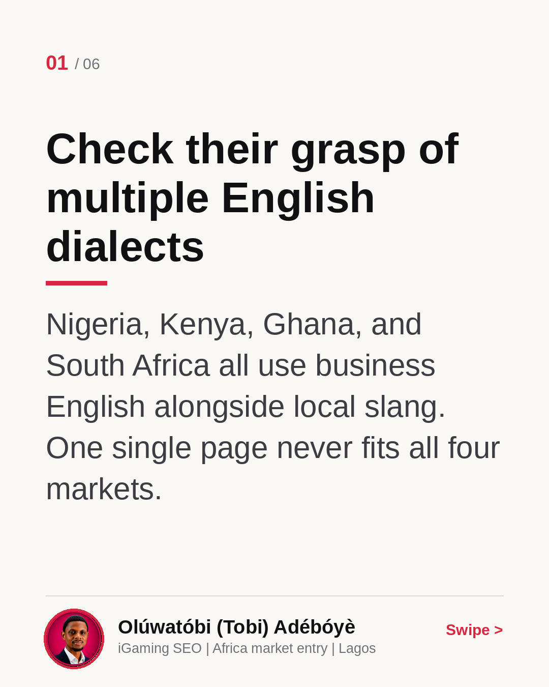
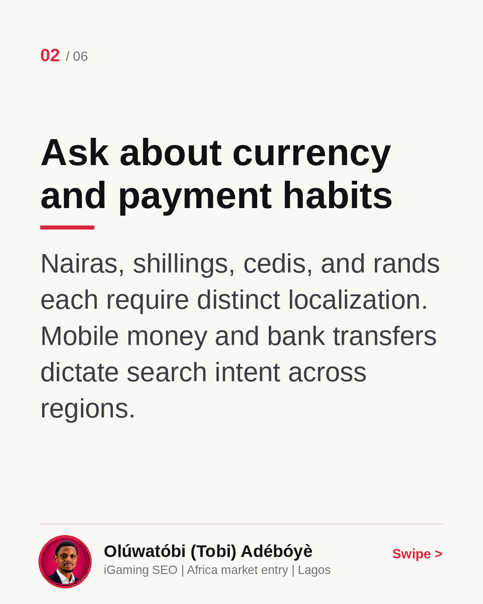
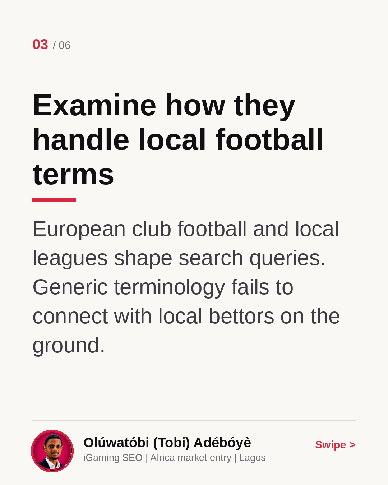
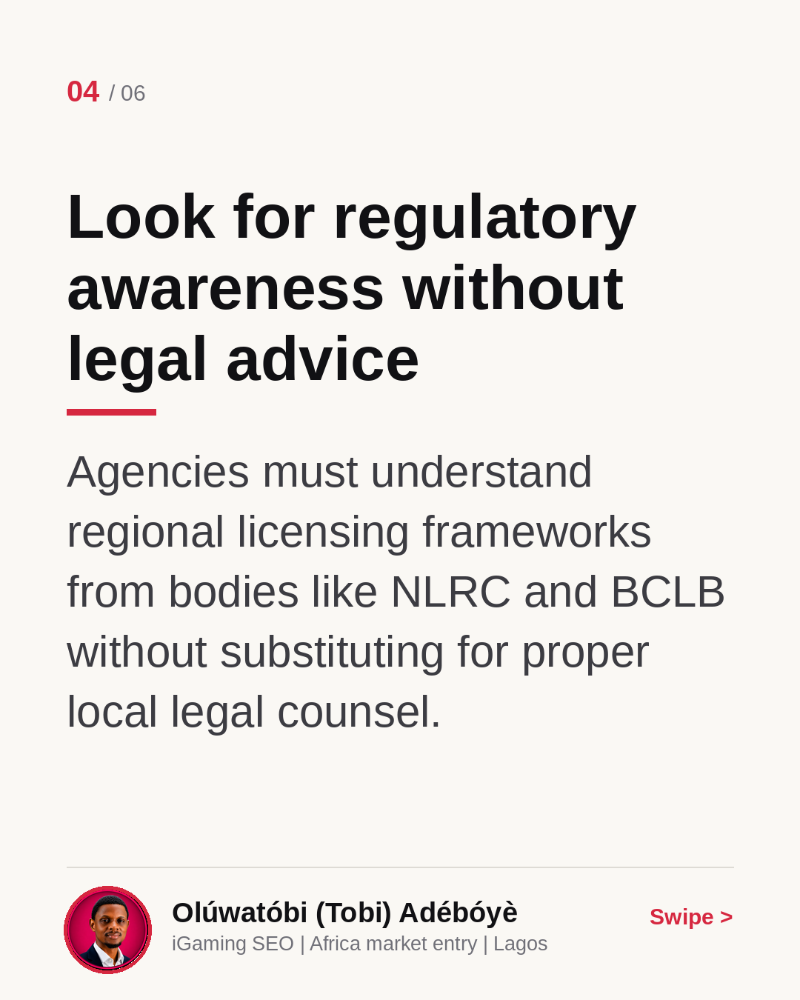
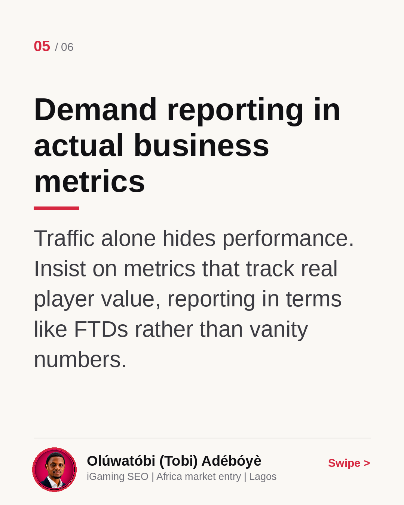
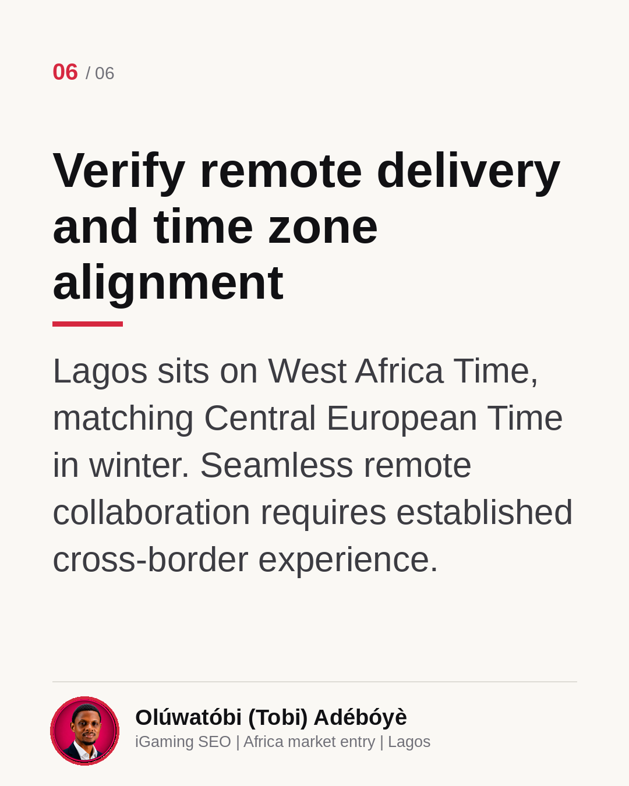

How to verify an African iGaming SEO partner
European operators entering African markets need SEO partners who understand local nuances. I broke down four tests to evaluate a prospective agency in this carousel. What is your biggest challenge when evaluating new regional partners?
Check their grasp of multiple English dialects
Nigeria, Kenya, Ghana, and South Africa all use business English alongside local slang. One single page never fits all four markets.

Ask about currency and payment habits
Nairas, shillings, cedis, and rands each require distinct localization. Mobile money and bank transfers dictate search intent across regions.

Examine how they handle local football terms
European club football and local leagues shape search queries. Generic terminology fails to connect with local bettors on the ground.

Look for regulatory awareness without legal advice
Agencies must understand regional licensing frameworks from bodies like NLRC and BCLB without substituting for proper local legal counsel.

Demand reporting in actual business metrics
Traffic alone hides performance. Insist on metrics that track real player value, reporting in terms like FTDs rather than vanity numbers.

Verify remote delivery and time zone alignment
Lagos sits on West Africa Time, matching Central European Time in winter. Seamless remote collaboration requires established cross-border experience.
